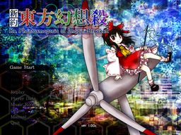

- Welcome to Touhou Wiki!
- Please register to edit. For assistance, check in with our Discord server or IRC channel.
Re.Phantasmagoria of Imagine Breaker
Re.Phantasmagoria of Imagine Breaker | |
|---|---|
|
 | |
| Released |
2014-12-31 (latest: v1.00c) |
| Genre |
Vertical Danmaku Shooting Game |
| Gameplay |
Single-player story mode |
| Platforms | |
| Requirements |
Direct3D, DirectX 8.1, Except the video cards which max texture size is only 256x256 (e.g. Voodoo) (Danmakufu) |
Despite the subtitle, gameplay is not like Dim.Dream or Flower View. Instead, Imagine Breaker is a conventional title that appears to be inspired by Perfect Cherry Blossom, both mechanically and aesthetically.
Frantically Forbidden Fruit is a sequel to this game, made by the same developer and using similar ideas (but without the Toaru crossover, of course).
Story[edit]
Gameplay[edit]
Imagine Breaker's defining feature is the ability to use a team of two characters. These are not like Imperishable Night teams; the characters are completely separate from each other and can be swapped out with a button, similar to Marisa when partnerned with Patchouli in Subterranean Animism.
The game uses a variation of the Perfect Cherry Blossom border system. The SP (Spiritual) Gauge in the lower left is filled by cherry items dropped by enemies, but borders can be "saved up" by the player; the bigger the SP Gauge gets, the more powerful the border. Imagine Breaker also features the "collect many items at the same time" scoring mechanic from Double Dealing Character.
Music[edit]
Imagine Breaker features a combination of arrangements of songs from the Touhou Project and original music in the style of ZUN.
External Links[edit]
- v1.00c, Axfc
- Gameplay video (includes download link)
- Creator's blog
- Creator's Twitter